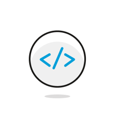
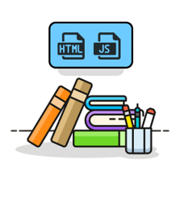

Web Design
The Web Development capstone course is intended to teach students the fundamentals of web development in a project-based learning environment. Students will be taught the basic elements of web development, such as web hosting, file organization, and incorporating Javascript into HTML files. Over the course of the school year, students will collaboratively and independently design, develop and implement functional and responsive web pages using these foundational skills.
Learning Environment
The course utilizes a blended classroom approach. The content is fully web-based, with students writing and running code in the browser. Teachers utilize tools and resources provided by CodeHS to leverage time in the classroom and give focused 1-on-1 attention to students. Each unit of the course is broken down into lessons. Lessons consist of video tutorials, short quizzes, example programs to explore, and written programming exercises. All assignments will be online and easily accessible
Google Classroom
Course Overview
 |
This unit is meant to provide students a refresher on topics in HTML and CSS they have covered in previous courses. It's recommended that students go through the materials before beginning the Web Development Capstone. |
|  | Students will learn about the script tag, and how it can be used to write JavaScript code in their HTML files. Students will also be introduced to useful JavaScript methods that can be used to alter the state of the CSS and HTML of a webpage, as well as how the Document Object Model supports the ability to make such changes. |
|  | Students are introduced to jQuery, a JavaScript library that makes webpage interaction easier. Students will learn the basic syntax of jQuery, how to incorporate it in their webpages, and useful methods that help animate and change the responsiveness of their websites. |
| Students will be introduced to the mobile apps course and the React Native framework and its program structure and syntax. Students will also preview some of the tools and technologies they will use to build and run their apps. |
| Students are introduced to components, the backbone of building apps with React Native. They learn about the stylesheet object and how to add custom style attributes to their apps. |
| Students use the TouchableHighlight to create "buttons" that add a layer of functionality. Students also learn about how to create and use text boxes in their programs. |
| Students learn how to add images to their apps to further customize the building experience. They gain a deeper understanding of mobile apps layouts using Flex values and the Dimensions API. |
State Competencies
Enduring Understanding